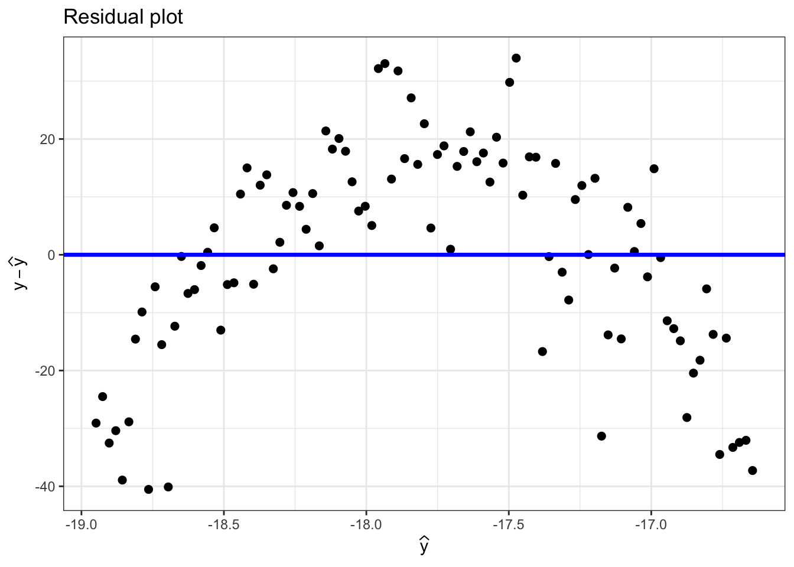
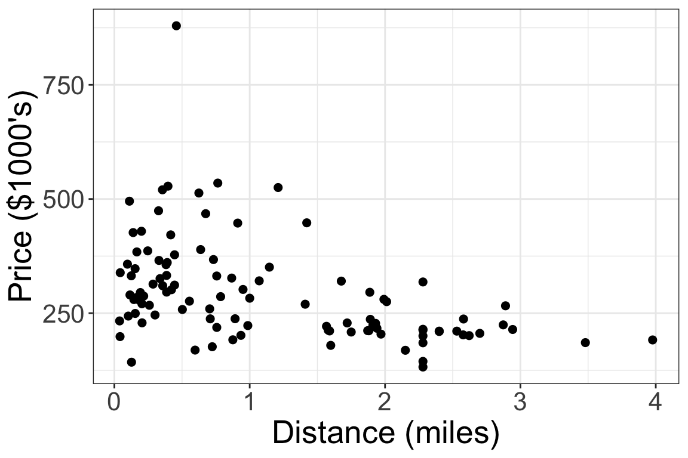
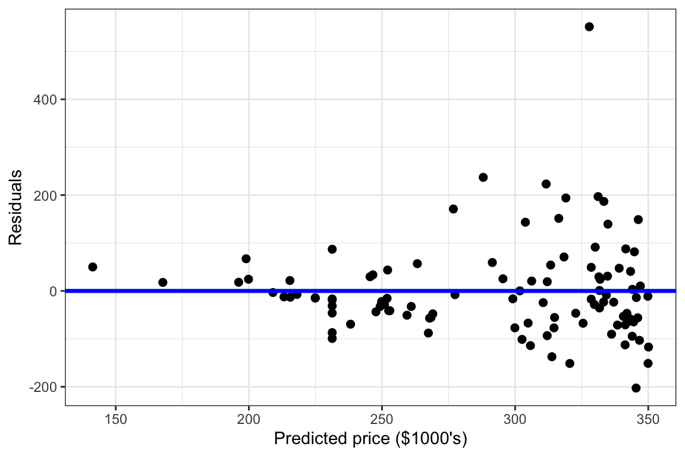
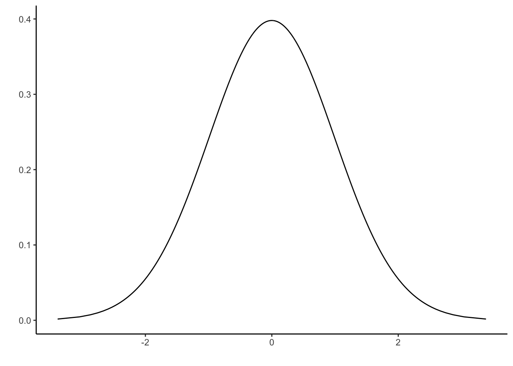
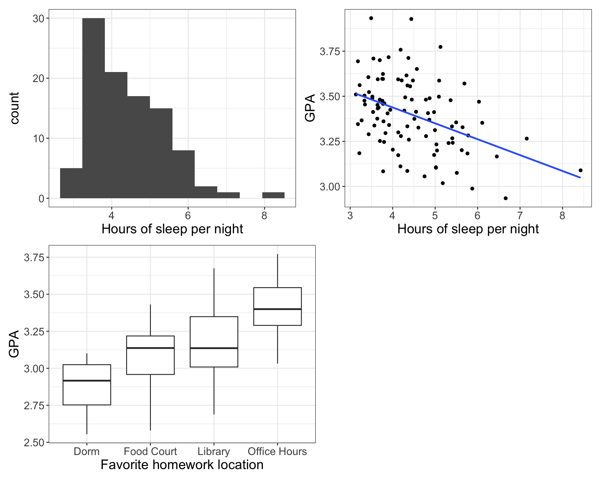

Exam 1 review questions
Below are questions to help you study for Exam 1. These are some examples of the kinds of questions I might ask.
- This is not a practice exam. There will be fewer questions on the actual exam.
- The questions cover most, but not all, possible material for the exam.
- The distribution of questions here is not necessarily reflective of the distribution of questions on the actual exam.
Multiple choice questions
- Which of the following is the correct formula for the residual sum of squares (aka sum of squared errors), SSE?
- \(SSE = \sum \limits_{i=1}^n (y_i - \widehat{y}_i)^2\)
- \(SSE = (y - \widehat{y})^2\)
- \(SSE = \dfrac{\sum \limits_{i=1}^n (x_i - \overline{x})(y_i - \overline{y})}{\sum \limits_{i=1}^n (x_i - \overline{x})^2}\)
- \(SSE = \sum \limits_{i=1}^n (y_i - x_i)^2\)
- \(SSE = \sum \limits_{i=1}^n (y_i - \overline{y})^2\)
Below is a residual plot. Which of the regression assumptions are satisfied?
- Shape
- Constant variance
- Both shape and constant variance
- Neither shape nor constant variance
- How do you assess the randomness assumption for a linear regression model?
- Look at a residual plot, and check if the points look randomly scattered around 0
- Look at a QQ plot, and check if the points fall close to the diagonal line
- Think about the data generating process – does knowing information about one observation provide information about another observation?
- Look at a scatterplot and check if the variables are correlated
- Think about the data generating process – do the data come from a random process, like a random sample or randomized experiment?
Short answer questions
Describe how we check for outliers and influential points when fitting a linear regression model.
Sketch a hypothetical scatterplot between two variables, \(X\) and \(Y\), which includes an influential outlier. Make sure to highlight which is the influential outlier.
Sketch a hypothetical scatterplot between two variables, \(X\) and \(Y\), which includes an outlier that is not influential. Make sure to highlight point is the non-influential outlier.
Sketch a hypothetical scatterplot between two variables, \(X\) and \(Y\), which suggests that a log transformation on \(X\) may be needed.
Sketch a hypothetical scatterplot between two variables, \(X\) and \(Y\), which suggests that a polynomial fit of order 2 may be needed.
Your friend Marisa, who lives in Minneapolis, Minnesota, visits the “spurious correlations” website from class, and finds a correlation of 0.887 between the “popularity of the first name Marisa” and the “number of robberies in Minnesota”.
- Explain why this is a “spurious” correlation
- Should your friend be more worried about getting robbed?
Example data questions
Is there a relationship between a house’s distance from bike trails, and its selling price? The RailsTrails data looks at a sample of 104 houses in Northampton, MA, and includes the following variables:
Price: the sale price (in $1000’s)Distance: distance (in miles) to the nearest bike trail
The scatterplot below plots Distance and Price for the sample of 104 homes.

You want to model the relationship between Distance and Price in the population of all houses in Northampton, MA. You decide to use simple linear regression. You fit the regression model in R, producing the output below:
Estimate Std. Error
(Intercept) 352.16 15.18
Distance -53.01 10.44 To assess the shape and constant variance assumptions of your linear regression model, you also create a residual plot:

Write down the population linear regression model for the relationship between Distance and Price in the population.
Using the R output above, write the equation of the fitted regression line which predicts Price from Distance.
Interpret the estimated slope, in context of the data.
Use the estimated regression line to predict the price for two houses: one which is 0.5 miles from a bike trail, and one which is 2 miles from a bike trail.
The true selling prices for the two houses are unlikely to be exactly equal to our predictions. Based on the residual plot, which of the two houses do you think will have a sale price closer its prediction from Question 13? Explain your reasoning.
Use the residual plot to assess the shape and constant variance assumptions. Do these two assumptions look reasonable? Explain.
The residual sum of squares, SSE, for the fitted model is 1010912. Calculate and interpret the RMSE in context of the data.
Calculate the residual and studentized residual for a house with distance 0.46 miles and price $879,330. The standard deviation of the residuals, ignoring this house, is 99.
Inference
Construct and interpret a 98% confidence interval for the true change in price associated with an increase of 1 mile in distance from the nearest bike trail. The critical value is \(t^* = 2.36\).
What does “98% confident” mean?
Your friend wishes to know whether there is a negative relationship between distance to the nearest bike trail, and price.
Write down null and alternative hypotheses, in terms of one or more model parameters, which allow you to test this research question.
Using the R output, calculate and interpret a test statistic for the hypotheses in the previous question. What are the degrees of freedom associated with the distribution of your test statistic?
Below is a picture of the appropriate \(t\) distribution. Shade the area under the curve corresponding to the p-value for your hypothesis test.

Example data questions
Imagine you are a statistician studying factors associated with student success in college. One of your collaborators conducts an observational study in which they survey 100 Wake Forest students, and record their GPA, the average number of hours they sleep per night, and their favorite place to do homework. After analyzing the data, they make the following plots:

Your collaborator then writes the following report on their analysis:
“To test whether there is a relationship between amount of sleep and GPA, we carried out a hypothesis test for the hypotheses \(H_0: \beta_1 = 0\) vs. \(H_A: \beta_1 \neq 0\), where \(\beta_1\) is the true slope for the linear regression model between sleep and GPA in the population.
The p-value for the hypothesis test is 0.000013. This means that there is only a 0.000013 probability that there is no relationship between sleep and GPA, so we have strong evidence for a relationship. The estimated slope is \(-0.088\) and the estimated intercept is 3.79. This means that an additional hour of sleep is associated with a GPA of 3.79, on average. Unfortunately, the normality assumption for this linear model is not appropriate because the distribution of hours of sleep is right-skewed, as we can see in the histogram.
Finally, from the boxplots we can see that there is a positive, linear relationship between students’ favorite place to do homework, and their GPA.
Based on these plots and the fitted model, we recommend that students who want to improve their GPA set their alarms for one hour earlier, and avoid doing any homework in their dorm rooms.”
- There are no errors in your collaborator’s plots, and they correctly calculated the estimated slope (-0.088) and intercept (3.79) of the fitted regression line. The reported p-value (0.000013) is also correct. Unfortunately, they made several errors in their interpretation of the figures, estimated regression line, and/or p-value. List these errors below, and explain to your collaborator why each of their errors is wrong.